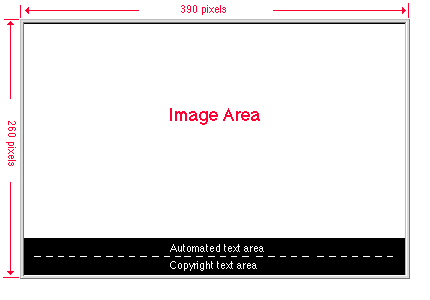

Netscape Client User Interface Group
Date created: March 11, 1998
Date Last Modified:
The current splash screen image for Netscape Communicator is 390 x 260 pixels in "landscape" orientation.

Though the best possible visual impact is very important for the design
of the splash screen image, it is highly recommended that the image size
should be designed as small as possible. The larger the graphic is, the
longer it takes for the application to call up the image, thus the slower
the image would pop-up during the application start up process.
Image content:
The Netscape Communicator splash screen has the product image (the
lighthouse) on the left side of the splash screen graphic, and the company
logo at the top far right corner. The product name "Netscape Communicator
Standard Edition" and all the components of the product are listed in the
center of the splash screen image. There is a light gray beveled frame
around the entire image.
Font choice:
The font choice for the product name and other information in the image
area matches the company's corporate identity font choice that are used
for company's other collateral materials. All the text in this portion
is bitmap text which can be polished in an image editing program such as
Photoshop with anti-alias graphic treatment.
Background color:
We chose to use white as the background color for the image, and black
for the bottom automated text display area for color simplicity and clarilty.
Automated text area:
Below the image area there is a 37 pixels black bar which is divided
into two sections. The automated text in the top section is controlled
by the code in the start-up process. It provides important information
such as components loading and network connection, etc. The copyright text
section at the bottom is a static text area. The text is provided through
a resource code string so it can be easily localized into any desired languages.
Color palettes and file formats:
For Windows: the image can be created using the Windows 256 color palette and saved as a .bmp file.
For the MacOS: the image can be created using the Mac 256 color palette and saved in .pict format.
For UNIX: the image should use the same color palette as the rest of the icons in the application. The UNIX versions of Netscape Communicator use a customized 23 color palette for the splash screen image. This same color palette is also used for the all the icons in the UNIX versions of Netscape Communicator. The image can be saved in .gif format.